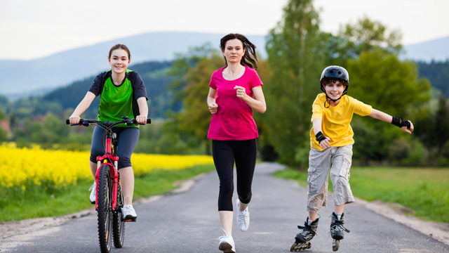
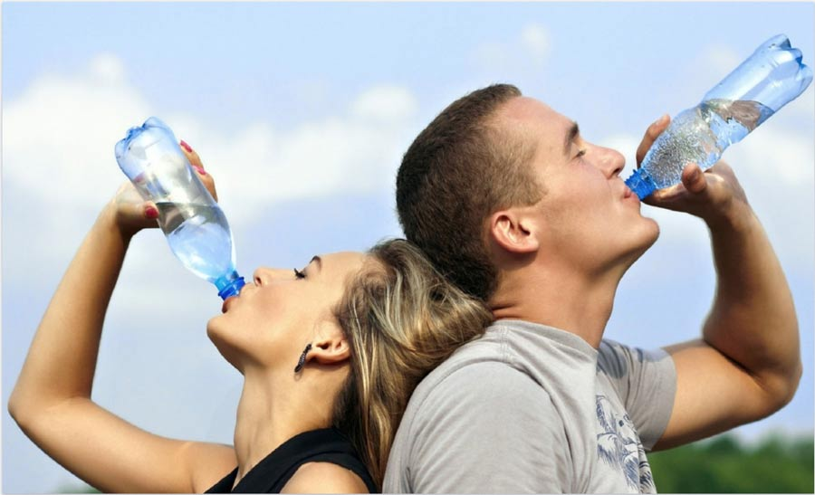
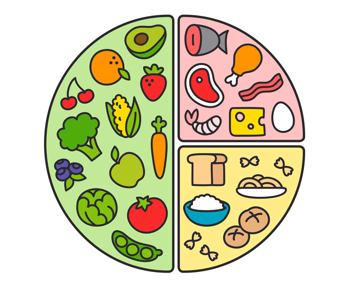
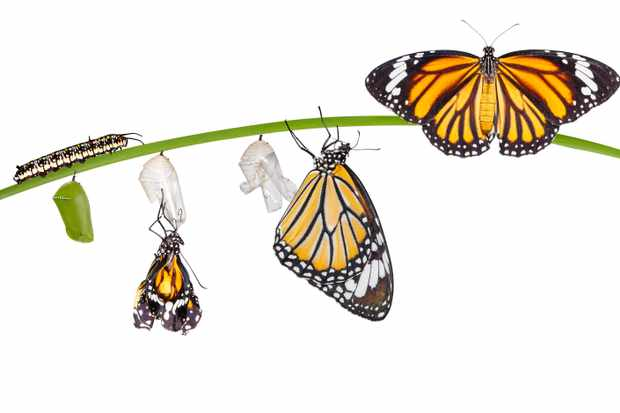

Mantenerse activo
Siempre está bueno hacer algun tipo de actividad fisica, al menos un ratito!

Tomar agua suficiente
Se recomienda siempre tomar entre 1 litro y 2.
Dormir las horas necesarias
Para que el cuerpo pueda descansar correctamente, se necesita dormir entre 7 y 8 horas por dia.

Tener un equilibrio
Lo importante es tener un balance, no hay que ir a un extremo! Permitite tus gustos y no te frustres ni exijas de más.
